În stînga este slide-ul din curs, în dreapta aceeași figură, calculată în browser din aceleași date. Butonul ▶ modifică parametrul pas cu pas.
Trend determinist și trend stochastic · Regresia falsă · Testul Dickey–Fuller · Phillips–Perron, KPSS și folosirea lor împreună · Rupturi structurale · Modele ARIMA(p,d,q) · ARIMA în practică
Trend determinist și trend stochastic
Patru serii cu trend
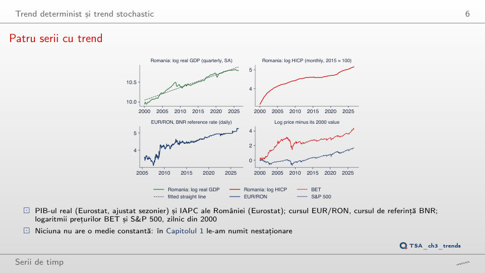
Răspuns
Mult sub ea: dreapta estimată pînă în T3 2008 are panta 1,56% pe trimestru, iar PIB-ul din T2 2026 este cu 76 de puncte logaritmice (100 × diferența logaritmilor) sub prelungirea ei. Pe tot eșantionul panta este 0,80% pe trimestru (circa 3,2% pe an), iar cea mai mare abatere, 17,5 puncte logaritmice, apare în T3 2008. După recesiunea din 2009, PIB-ul nu a revenit la dreapta de dinainte: un argument pentru un trend stochastic, nu pentru o dreaptă fixă plus zgomot.
Serii staționare în jurul trendului și serii staționare în diferențe: efectul unui șoc
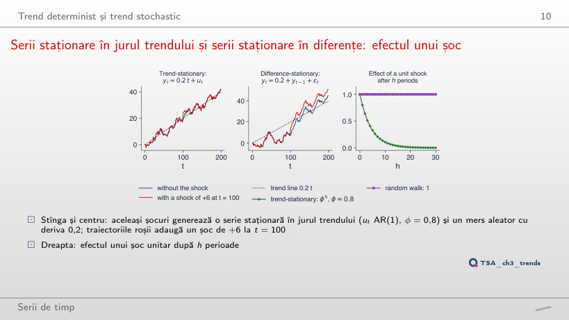
Răspuns
Pentru φ < 1, aproape nimic: 6φ⁹⁹ este 1,5 · 10⁻⁹ la φ = 0,8 și 0,04 la φ = 0,95; abia la φ = 0,99 rămîn 2,2. La φ = 1 rămîne întregul șoc, 6, ca la mersul aleator: zgomotul AR(1) devine el însuși un mers aleator, iar cele două modele coincid. Cu φ = 0,8, efectul unui șoc unitar este 0,107 după 10 perioade, iar timpul de înjumătățire este 3,1 perioade.
Eliminarea trendului dintr-un mers aleator
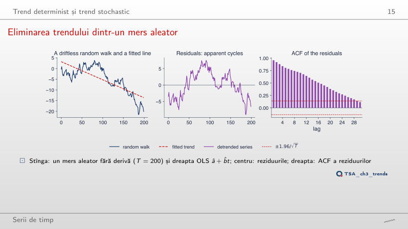
Răspuns
În 90,4% din cazuri, nu în 5%; R² median este 0,44. Pe traiectoria din slide, R² = 0,61 și t = −17,7. Reziduurile au ρ̂(1) = 0,96 și rămîn pozitiv autocorelate pînă la lagul 36: cicluri lungi create de eliminarea trendului (Nelson și Kang). Cu T = 50, testul respinge tot în 82,0% din cazuri: eroarea nu dispare cu un eșantion mai scurt sau mai lung.
Regresia falsă
Regresia falsă prin simulare
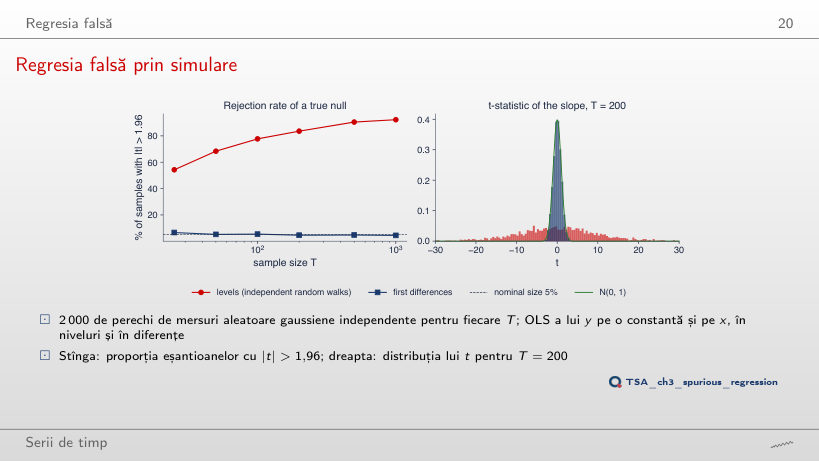
Răspuns
Crește, la 92,3%: |t| median urcă de la 6,3 la 14,2, aproximativ ca √T; R² median rămîne în jur de 0,17, iar DW median scade la 0,015. Mai multe date nu corectează o regresie falsă. În diferențe, rata rămîne aproape de nivelul nominal: 4,65% la T = 200 și 4,5% la T = 1 000.
O regresie falsă pe date reale
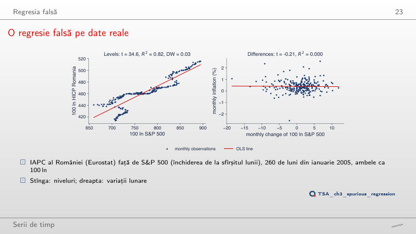
Răspuns
Nu: pe 2005–2012, t = −0,72 și R² sub 0,01 în niveluri; pe 2013–2026, t = 33,2 și R² = 0,87. În 2005–2012 acțiunile au scăzut și au revenit, în timp ce prețurile au crescut; după 2013 ambele cresc. În diferențe, pe tot eșantionul, t = −0,21 (p = 0,83) și R² = 0,0002. Regula lui Granger și Newbold semnalează problema: R² = 0,82 > DW = 0,03.
Interpretarea regresiei IAPC
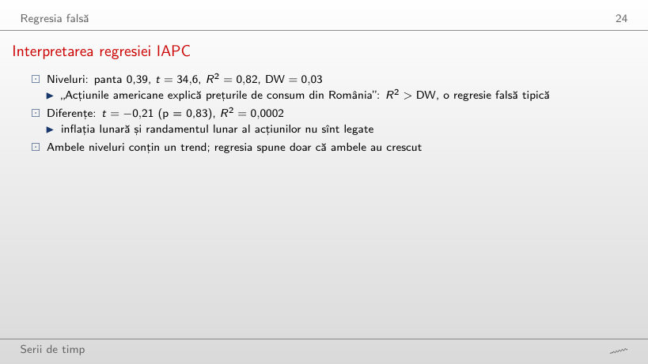
Exemplu rezolvat
Răspuns
Nu: cu o singură variabilă explicativă, R² = t²/(t² + n − 2) = 34,6²/(34,6² + 258) = 0,82. Ambele vin din aceeași eroare standard, prea mică pentru că eroarea este ea însăși un mers aleator; DW = 0,03 o arată. În diferențe lunare, t = −0,21 (p = 0,83) și R² = 0,0002: inflația lunară și randamentele bursiere nu sînt legate.
Testul Dickey–Fuller
Distribuțiile Dickey–Fuller
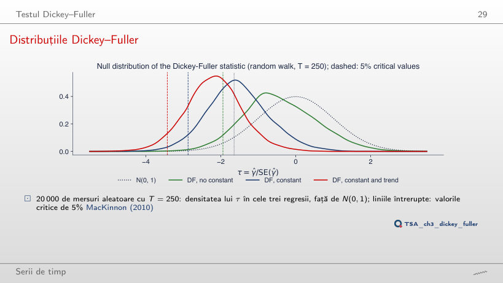
Răspuns
În 77,4% din eșantioane (46,1% cu constantă, 9,8% fără constantă), față de 5% sub N(0, 1). Ca să respingem în 5% din cazuri, valoarea critică trebuie coborîtă la cuantila de 5% a distribuției Dickey–Fuller: −1,95, −2,86 și −3,42 în simulare; −1,94, −2,87 și −3,43 în tabelele MacKinnon. Cu −3,42, proporția pentru constantă și trend este 4,99%.
Valorile critice ale testului Dickey–Fuller
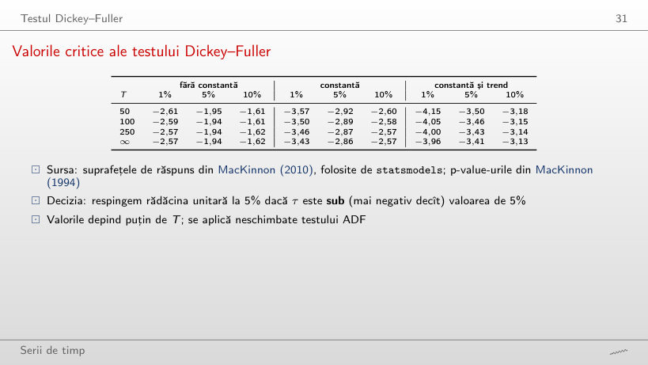
Răspuns
Nu: valoarea critică de 5% pentru T = 50 este −2,92, iar −2,90 > −2,92. Cu valoarea asimptotică −2,86 am fi respins-o: valorile critice depind puțin de T, dar contează cînd τ este aproape de prag. Cu valoarea Normală −1,645 respingerea ar fi fost „clară” și greșită.
Exemplu rezolvat: PIB-ul real al României
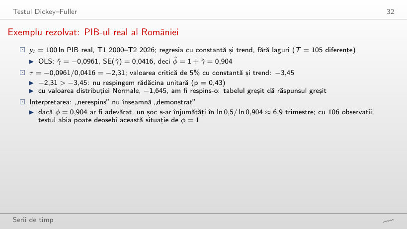
Exemplu rezolvat
Răspuns
τ devine −1,80 (γ̂ = −0,0173, SE 0,0096), cu valoarea critică −2,89 și p = 0,38: tot nerespingere. Fără constantă, τ = 3,29 și p ≈ 1. Pentru o serie cu trend, alternativa corectă este cea cu trend: slide-ul are τ = −2,31 față de −3,45 (p = 0,43). Concluzia nu depinde aici de termenii determiniști, dar valoarea critică se schimbă cu fiecare caz.
Alegerea numărului de laguri k
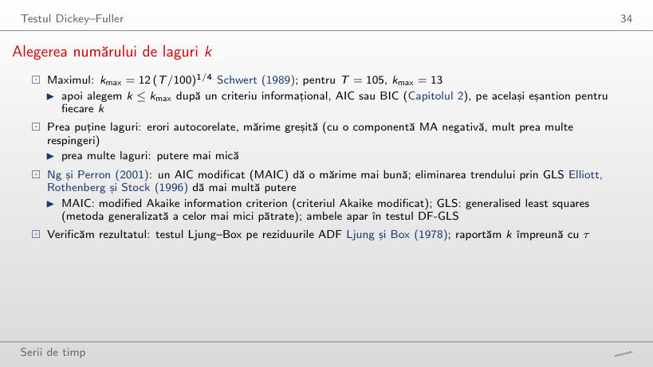
Exemplu rezolvat
Răspuns
BIC alege k = 1, pentru că penalizează fiecare lag cu ln N în loc de 2: τ = −0,38 (p = 0,988), față de τ = −0,96 (p = 0,949) cu k = 6. Concluzia rămîne aceeași: rădăcina unitară nu este respinsă. Lagurile schimbă τ, de aceea k se raportează împreună cu τ.
Mărimea și puterea testului Dickey–Fuller
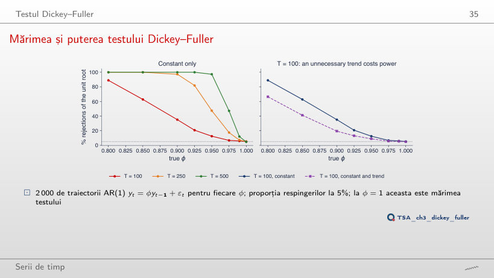
Răspuns
În 12,5% din cazuri: testul aproape niciodată nu deosebește φ = 0,95 de φ = 1. Cu T = 250, 47,4%; cu T = 500, 97,25%. La φ = 1, proporțiile sînt mărimea testului: 5,3%, 5,2% și 4,65% cu constantă. Un trend inutil costă putere: la T = 100 și φ = 0,9, 35,1% cu constantă și 19,4% cu constantă și trend.
Interpretarea curbelor de putere
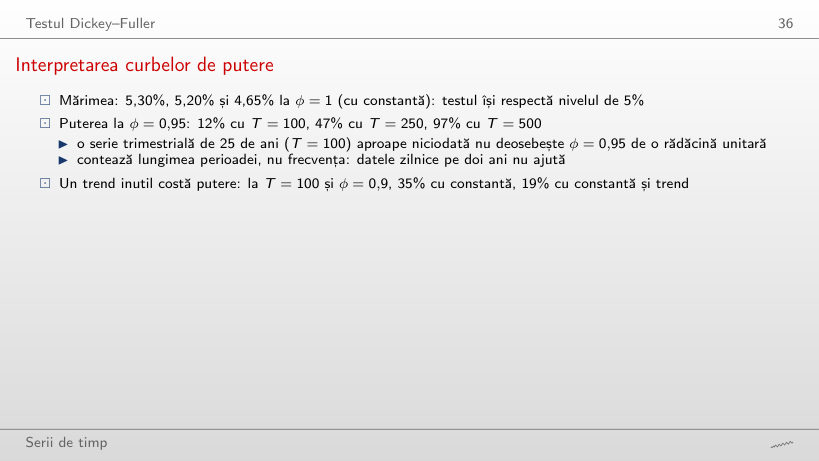
Răspuns
În 12,5% din cazuri; cu constantă și trend, în 8,9%. Ca să ajungă la 97,3% este nevoie de T = 500. La φ = 1 testul respinge în 5,3%, 5,2% și 4,65% din cazuri (T = 100, 250, 500): mărimea este corectă, puterea pe eșantioane scurte este mică.
Phillips–Perron, KPSS și folosirea lor împreună
Testul KPSS: staționaritatea ca ipoteză nulă
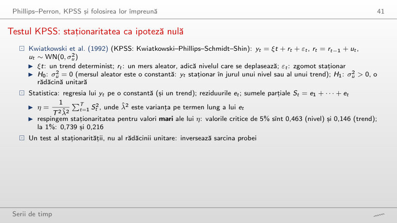
Exemplu rezolvat
Răspuns
η = 1,533 (L = 6), mult peste 0,463. În jurul unei constante, reziduurile conțin tot trendul: sînt negative la început și pozitive la sfîrșit, iar sumele parțiale fac excursii uriașe. Pentru o serie cu trend se folosește versiunea cu trend, cu valoarea critică 0,146; acolo 0,198 > 0,146 respinge staționaritatea la 5%, dar nu la 1% (0,216).
KPSS: rolul sumelor parțiale
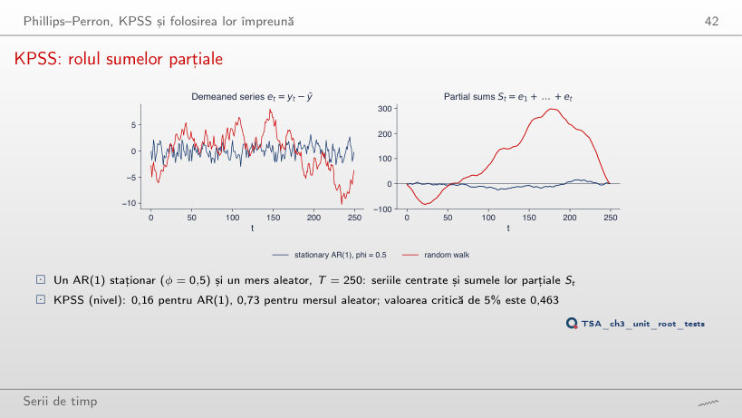
Răspuns
Abia de la φ = 0,95: KPSS = 0,565 > 0,463 (p = 0,027). La φ = 0,9 statistica este 0,326 și testul nu respinge, deși seria este foarte persistentă; la φ = 1 urcă la 1,213. Pentru mersul aleator din panou, KPSS = 0,733 (p = 0,011). Sumele parțiale ale unei serii persistente se îndepărtează mult de 0, iar η crește.
ADF și KPSS împreună
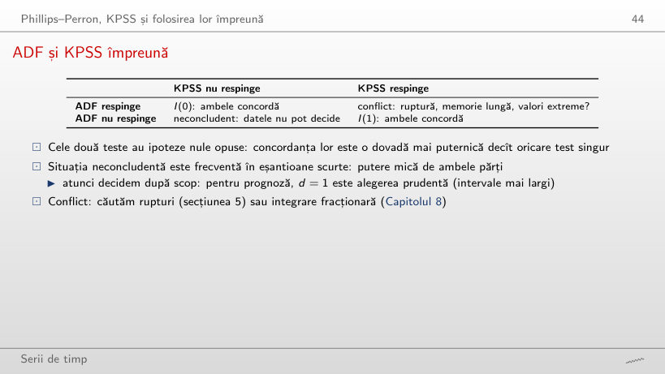
Răspuns
În „neconcludent”: ADF tot nu respinge (p = 0,43), iar KPSS = 0,198 este sub valoarea critică de 1%, 0,216. La 10%, inflația anuală trece în I(1) (KPSS 0,404 > 0,347), iar randamentele BET, S&P 500 și creșterea PIB-ului SUA trec în „conflict”: la nivelul de 10%, KPSS respinge mai ușor.
Teste de rădăcină unitară pe serii reale
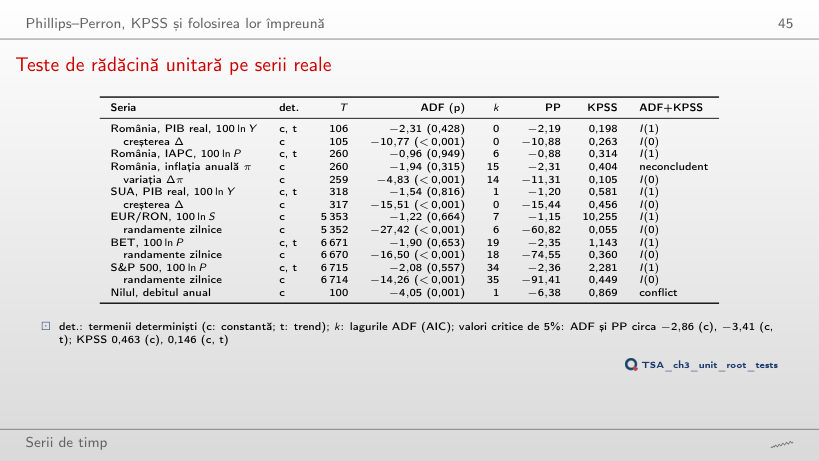
Răspuns
Devine I(1): KPSS în jurul unui trend este 0,399 > 0,146, iar ADF tot nu respinge (τ = −1,99, p = 0,61). Randamentele BET trec în „conflict” (KPSS 0,250 > 0,146). Verdictul depinde de alternativa aleasă; pentru seriile fără trend, constanta este alegerea din curs.
Rupturi structurale
Testul ADF în prezența unei schimbări de nivel
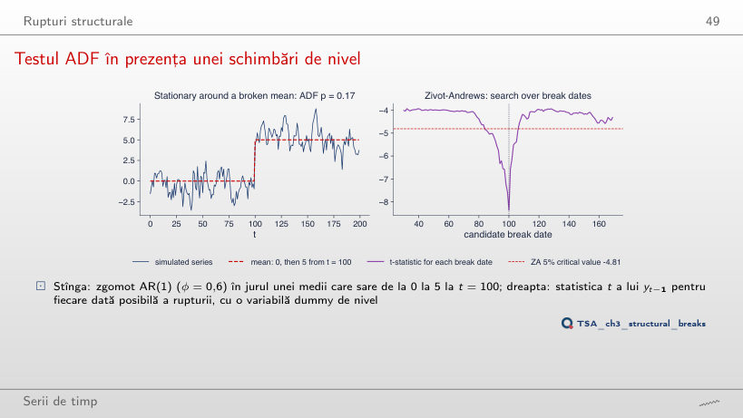
Răspuns
De la un salt de 3,5 (p = 0,056); la 3, p = 0,030. La saltul din curs, 5, p = 0,17, iar pe 2 000 de serii cu același salt testul DF respinge în 71,5% din cazuri (fără salt: 100%); la saltul 7, doar în 0,55%. Zivot–Andrews include ruptura și respinge pentru orice salt: la saltul 5, ZA = −7,47 (un lag ales după AIC), mult sub −4,81, cu nivelul schimbat de la t = 100. Curba din dreapta este calculată fără laguri: minimul ei, −8,37, este atins la t = 100; −7,47 este statistica testului, nu minimul curbei.
Interpretarea rupturii simulate
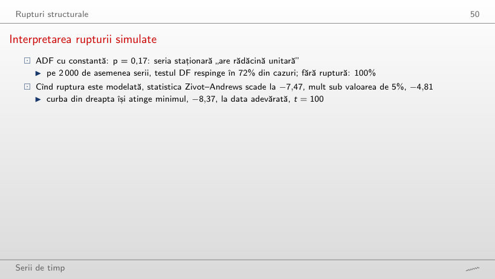
Răspuns
Nu. Curba din grafic, fără laguri, are minimul −8,37 la t = 100. Statistica Zivot–Andrews din statsmodels alege lagurile după AIC (aici 1 lag) și dă −7,47, cu ruptura tot la t = 100. Ambele sînt mult sub −4,81, deci concluzia nu se schimbă: seria este staționară în jurul unei medii cu o ruptură.
Zivot–Andrews pe două serii reale
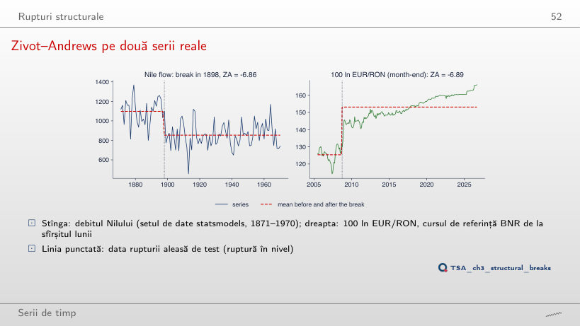
Răspuns
ZA = −4,40, cu valoarea critică de 5% −4,41 (p = 0,051): rădăcina unitară nu mai este respinsă la 5%, iar data aleasă se mută în iulie 2009. Cu ruptură în nivel și pantă: −6,83, sub −5,07, în octombrie 2008. Pentru Nil, toate cele trei variante resping (−6,86; −5,68; −6,84); rupturile în nivel sînt datate în 1898, cea în pantă în 1914. Rezultatul depinde de forma presupusă a rupturii.
Interpretarea celor două rupturi
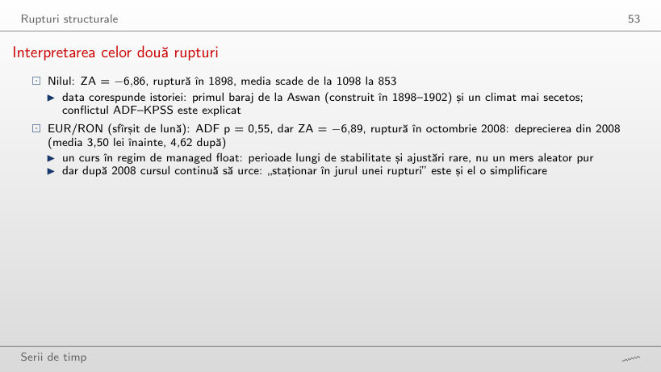
Răspuns
Abia nu: ZA = −4,40, iar valoarea critică de 5% este −4,41 (p = 0,051), cu ruptura în iulie 2009. Cu ruptura în nivel (−6,89) sau în nivel și pantă (−6,83, valoarea critică −5,07) respinge, cu ruptura în octombrie 2008. Pentru Nil toate cele trei versiuni resping.
Modele ARIMA(p,d,q)
PIB-ul României: identificarea
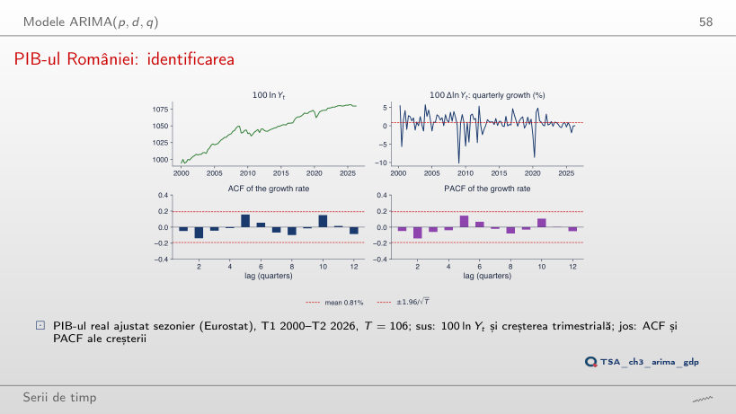
Răspuns
Nu întru totul: cu 35 de rate de creștere (T2 2000–T4 2008), media este 1,57% pe trimestru, ρ̂(1) = −0,27, iar o valoare ACF iese din banda ±0,33; Ljung–Box Q*(8) = 11,1 (p = 0,20) nu respinge însă zgomotul alb. Pe tot eșantionul: media 0,81%, ρ̂(1) = −0,05, ρ̂(2) = −0,14, Q*(8) = 7,3 (p = 0,51); pînă în T4 2019, Q*(8) = 4,2 (p = 0,84).
Alegerea modelului după AICc
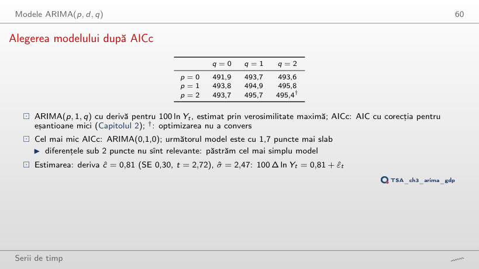
Răspuns
Nu: diferențele sub 2 puncte nu sînt informative, așa că păstrăm modelul cel mai simplu. Pentru orice sfîrșit de eșantion din T4 2015 pînă în T2 2026, cel mai mic AICc și cel mai mic BIC aparțin lui ARIMA(0,1,0); deriva estimată pe tot eșantionul este 0,81 (SE 0,30, t = 2,72).
PIB-ul României: verificarea reziduurilor
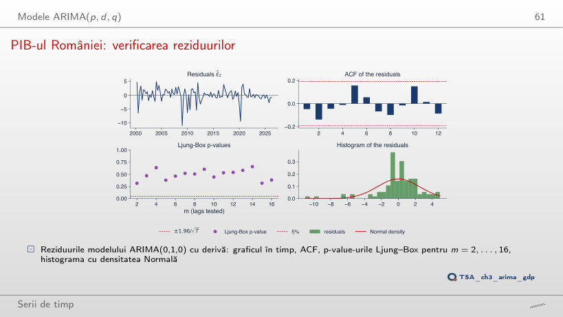
Răspuns
Nu: optimizarea nu a convers, iar AICc este 495,4, față de 491,9 pentru ARIMA(0,1,0) cu derivă. ARIMA(0,1,0) lasă deja reziduuri necorelate: Q*(8) = 7,3 (p = 0,51), iar Q*(12) are p = 0,54. Parametrii în plus reduc mecanic autocorelația reziduurilor. Ce rămîne în toate modelele sînt cozile groase: pentru ARIMA(0,1,0), kurtosis-ul 7,9, Jarque–Bera 145 și reziduul −11,0 în T1 2009.
Interpretarea verificării reziduurilor
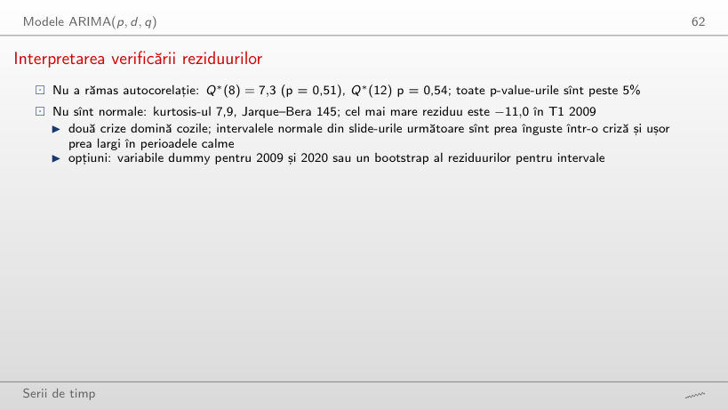
Exemplu rezolvat
Răspuns
Cu m − p − q = 8 − 2 = 6: Q*(8) = 5,81 și p = 0,44. Pentru ARIMA(0,1,0), Q*(8) = 7,28 cu 8 grade de libertate și p = 0,51. Fără corecție, p-value-urile modelelor cu parametri ARMA ar fi prea mari.
Prognoza cu modele ARIMA
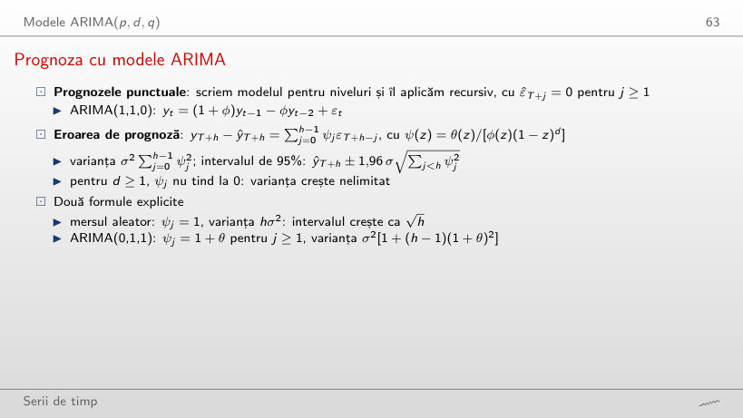
Exemplu rezolvat
Răspuns
De 2,53 ori: 30,6% față de 12,1% din PIB. Intervalul TS se oprește la 1,96σ̂/√(1 − φ̂²) = 12,09, pe cînd cel DS crește ca √h. La h = 12, semilățimile sînt 16,8% și 11,2%, ca pe slide.
Exemplu rezolvat: prognoze ARIMA(1,1,0)
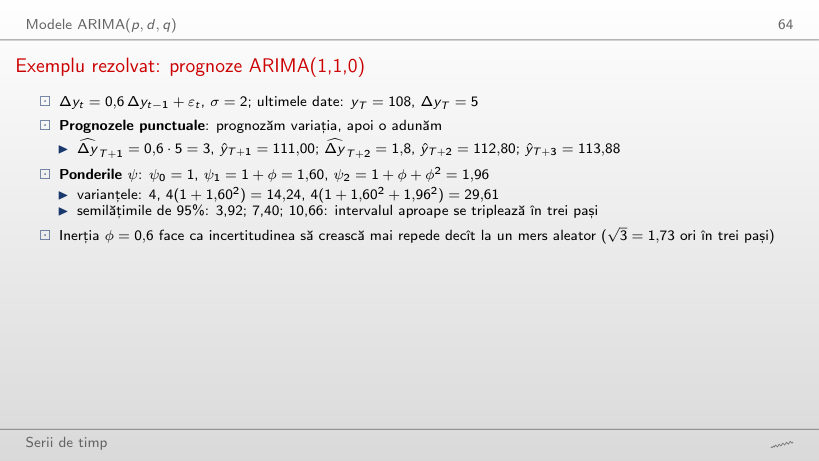
Exemplu rezolvat
Răspuns
Prognozele sînt toate 108, iar semilățimile 3,92, 5,54 și 6,79 = 1,96 · 2 · √h. Cu φ = 0,6 prognozele urcă la 111,00, 112,80 și 113,88, iar semilățimile la 3,92, 7,40 și 10,66: impulsul face ca fiecare șoc să se transmită și în variațiile următoare.
Creșterea intervalelor de prognoză cu orizontul
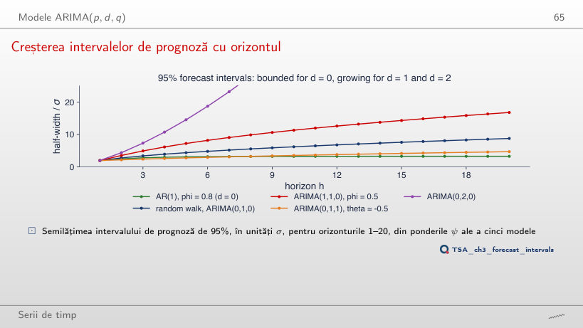
Răspuns
Crește cu θ: 2,14σ la θ = −0,9, 4,70σ la θ = −0,5, 8,77σ la θ = 0 (mersul aleator) și 12,96σ la θ = 0,5. Varianța este σ²[1 + (h − 1)(1 + θ)²]: un θ negativ compensează o parte din fiecare șoc. Pentru ARIMA(1,1,0), semilățimea la h = 20 este 16,78σ cu φ = 0,5 (graficul) și 20,53σ cu φ = 0,6 (exemplul rezolvat, unde la h = 3 este 5,33σ, adică 10,66 cu σ = 2). AR(1) cu φ = 0,8 se oprește la 3,27σ.
Interpretarea lățimii intervalelor
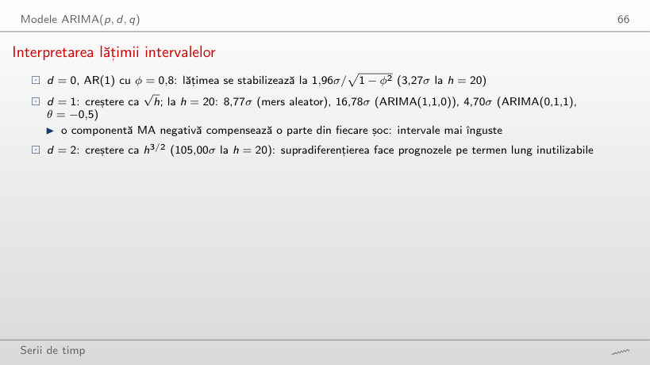
Exemplu rezolvat
Răspuns
φ = 0,5, valoarea din grafic. Cu φ = 0,6, semilățimea la h = 20 este 20,53σ. La h = 1 ambele dau 1,96σ, iar la h = 4: 6,14σ (φ = 0,5) și 6,83σ (φ = 0,6). Mersul aleator are 8,77σ la h = 20.
PIB-ul României: două prognoze
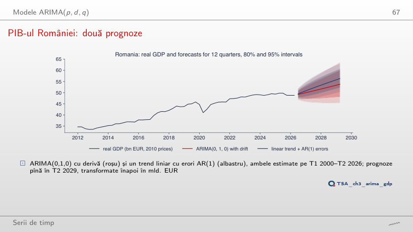
Răspuns
Modelul staționar în jurul trendului, dar la mică distanță: RMSE 7,2 puncte logaritmice, față de 7,6 pentru ARIMA(0,1,0) cu derivă; ambele au ratat scăderea din 2020. Din T4 2015 diferența este mai mare (2,6 față de 4,7), iar din T2 2023 ordinea se inversează (6,5 față de 5,6). Din T2 2026, ARIMA(0,1,0) dă 53,8 mld. EUR (prețuri 2010) după 12 trimestre, cu semilățimea de 95% de 16,8 puncte logaritmice; modelul cu trend dă 56,3 mld. și 11,2. ADF și KPSS clasifică nivelul PIB ca I(1) (p = 0,43; 0,198 > 0,146), dar puterea mică a testelor nu exclude modelul cu trend: alegerea lui d schimbă prognoza și intervalul.
Interpretarea prognozelor PIB
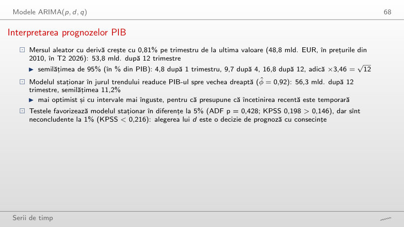
Răspuns
La 5%, ADF nu respinge (p = 0,43) și KPSS respinge (0,198 > 0,146): I(1). Dovada este însă slabă: la 1% KPSS nu mai respinge (0,198 < 0,216), iar cu T ≈ 100 puterea ADF la φ = 0,9 este 19%. Alegerea lui d contează: după 12 trimestre, 53,8 mld. EUR cu semilățimea 16,8% (DS) față de 56,3 mld. EUR cu 11,2% (TS).
Supradiferențierea PIB-ului României
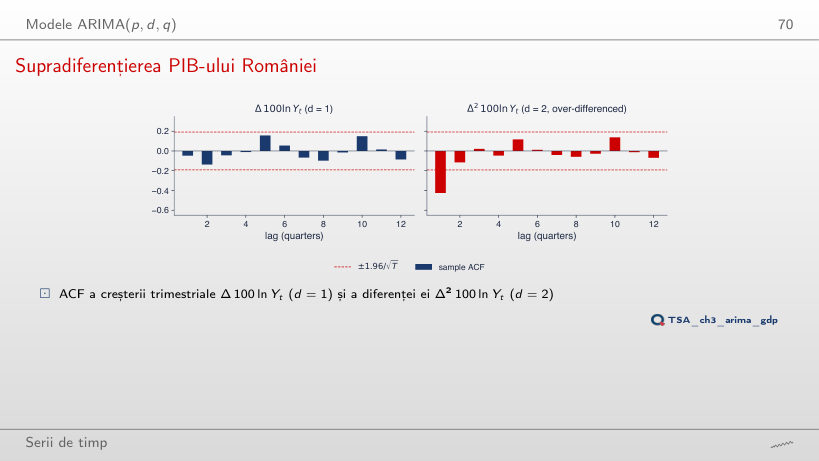
Răspuns
Toate trei: ρ̂(1) scade de la 0,13 la −0,49, varianța crește de la 1,22 la 2,12, iar un MA(1) estimat pe Δ² dă θ̂ = −0,986 (SE 0,008). Pentru România: ρ̂(1) de la −0,05 la −0,43, varianța de la 6,16 la 12,80, θ̂ = −0,987 (SE 0,080). O a treia diferențiere agravează simptomele: pentru România, varianța urcă la 35,6 și ρ̂(1) la −0,57.
ARIMA în practică
Inflația din România: alegerea între d = 0 și d = 1
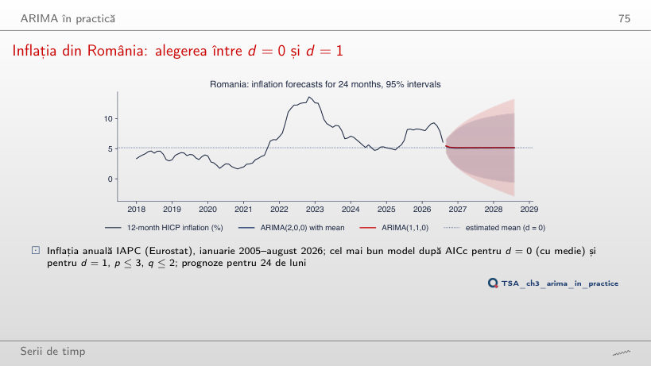
Răspuns
Nu: AICc nu compară modele cu d diferit, deoarece cu d = 1 verosimilitatea este calculată pentru Δπ, o altă serie. Alegem d prin teste și judecată: KPSS (0,404 < 0,463) păstrează d = 0, ADF (p = 0,32) sugerează d = 1. Prognozele după 24 de luni sînt apropiate, 5,1% și 5,2%, dar intervalele de 95% diferă: [−0,6; 10,9] și [−2,9; 13,3]. ARIMA(3,1,2) are AICc 441,1, dar optimizarea nu a convers.
EUR/RON: ARIMA față de mersul aleator
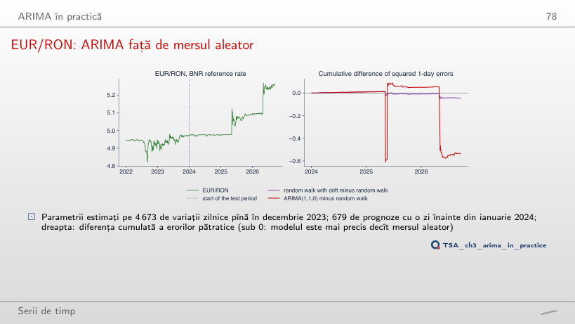
Răspuns
Nu: RMSE 0,1307, față de 0,1304 pentru mersul aleator, o pierdere de 0,19%. Cu testul din 2019, 2020, 2022 sau 2024, cîștigul este 2,1–2,3%; în curs (din 2024), 0,1300 față de 0,1330, iar pe 20 de zile 0,638 față de 0,667 (4,3%). Cîștigul depinde de perioada aleasă și provine din cîteva zile cu salturi ale cursului; o comparație formală cere testul Diebold–Mariano.
O serie clasică: PIB-ul real al SUA după 2007
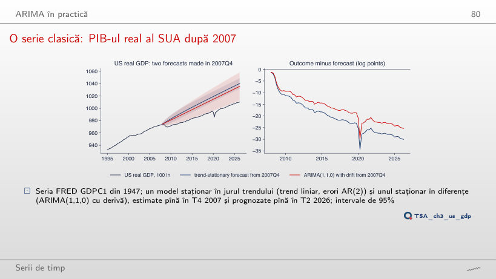
Răspuns
Nu: din T4 2000, abaterea la final este −34,7 pentru modelul cu trend (semilățimea intervalului de 95%: 7,9) și −34,5 pentru ARIMA(1,1,0) cu derivă (28,1). Din T4 2007: −30,1 (8,2) și −25,4 (22,9); din T4 2019: −8,0 (11,1) și −5,0 (13,2). Din 2000 și din 2007, niciun interval nu acoperă rezultatul; din 2019, ambele îl acoperă. Ambele modele prelungesc deriva de dinaintea originii, iar creșterea de după 2008 a fost mai lentă.
Simulări: șocuri din distribuția Normală, generate cu seed-urile codului capitolului; rezultatele Monte Carlo sînt cele din curs. PIB-ul României: Eurostat, volume înlănțuite (prețuri 2010), serie ajustată sezonier, în versiunea folosită în curs. IAPC: Eurostat, pînă în august 2026. EUR/RON: cursul de referință BNR; BET și S&P 500: datele de piață ale cursului, pînă la 18 septembrie 2026. PIB-ul SUA: FRED GDPC1, pînă în T2 2026. Nilul: setul de date din statsmodels, 1871–1970.